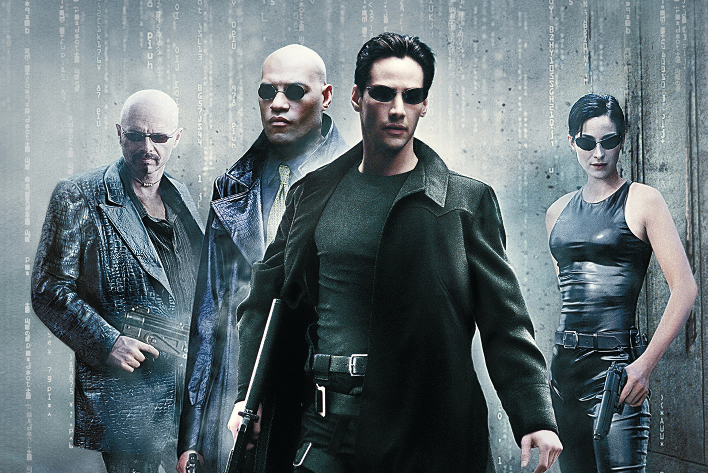
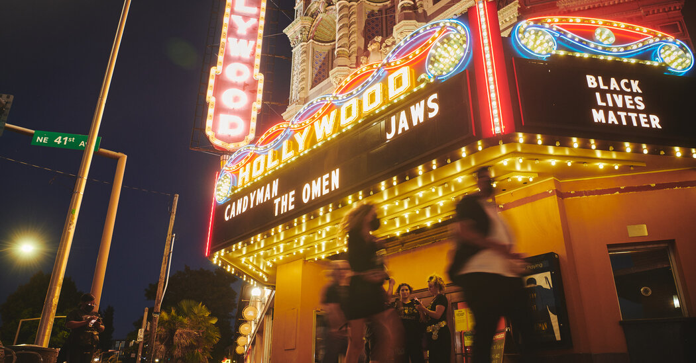

Matrix é um filme australo-estadunidense de 1999, dos gêneros ação e ficção científica, dirigido por Lilly e Lana Wachowski e protagonizado por Keanu Reeves, Laurence Fishburne e Carrie-Anne Moss.
O filme descreve um futuro distópico no qual a realidade, como percebida pela maioria dos humanos, é, na verdade, uma realidade simulada chamada "Matrix", criada por máquinas sencientes para subjugar a população humana, enquanto o calor e a atividade elétrica de seus corpos são usados como fonte de energia. O cibercriminoso e programador de computador Neo aprende esta verdade e é atraído para uma rebelião contra as máquinas, que envolve outras pessoas que foram libertadas do "mundo dos sonhos".
É creditado a Matrix a popularização de um efeito visual conhecido como "bullet time", no qual a percepção aumentada de certos personagens é representada permitindo que a ação dentro de um tiro progrida em câmera lenta enquanto o ponto de vista da câmera parece se mover pela cena em velocidade normal. O filme contém numerosas referências a ideias filosóficas e religiosas, e homenageia textos como a Alegoria da Caverna de Platão, Simulacros e Simulação de Jean Baudrillard e Alice no País das Maravilhas de Lewis Carroll.
Sinópse

Thomas A. Anderson vive uma vida dupla. De dia, é um programador para uma companhia de software. De noite é um hacker, invadindo sistemas de computador ilegalmente e roubando informações, sob o apelido de Neo. Durante a sua vida como pirata informático, Neo convive com uma pergunta constante: "O que é a Matrix?". Na busca da resposta, dedica-se de forma persistente a encontrar um suposto "terrorista" conhecido apenas como Morpheus. O que Neo não sabe é que o Morpheus o tem observado por longo tempo. Quando este finalmente o contacta, Neo é perseguido e capturado por sinistros agentes, que presume pertencerem a alguma organização do governo e descobriram as suas atividades ilegais. Perante a recusa em cooperar, estes implantam um software eletrônico (backdoor) no seu corpo para poderem monitorar os seus atos e o libertam. Neo é então contactado por Trinity, uma famosa hacker, que o incentiva a procurar a verdade sobre a Matrix. Quando Neo aceita se encontrar com ela, esta remove a backdoor e o leva até Morpheus. Durante a conversa, Morpheus pede para Neo escolher: voltar a sua vida cotidiana ou saber finalmente o que é a Matrix. Neo aceita a segunda opção e toma um comprimido vermelho. Após entrar em choque, Neo acorda desorientado e alarmado por se encontrar fraco, sem pelos e nu numa cápsula de líquido, com uma série de conectores implantados na sua pele ligados a cabos. À sua volta vê apenas um número infindável de cápsulas iguais a dele, sob um céu constantemente negro. Uma máquina desliga-o do sistema e evacua-o para um esgoto, onde Morpheus e Trinity o resgatam e o conduzem a nave Nebuchadnezzar, apresentando-o a equipe.
O seu corpo é recuperado dos anos que passou dentro da cápsula. Logo que Neo ganha consciência e capacidade motora, Morpheus lhe conta finalmente a verdade, revelando que o mundo que ele conhece não existe: é parte de uma simulação interativa neural, a que chamam de Matrix. Na realidade, a humanidade vive num futuro pós-apocalíptico onde as máquinas, dotadas de inteligência artificial aperfeiçoada ao ponto da auto-consciência, entraram em guerra com os humanos quando estes as tentaram destruir, temendo serem subjulgados por elas. Diante da derrota eminente, a humanidade cobriu o céu com nuvens negras para bloquear a luz do sol, principal fonte de energia das máquinas. O plano falhou e, derrotados, os humanos passaram a ser "cultivados" dentro de cápsulas em enormes campos, servindo de fonte bioelétrica para as máquinas, criando a Matrix para poderem controlar as suas consciências. Os poucos humanos que conseguiram se libertar criaram a Resistência, que se concentra numa cidade subterrânea onde os humanos ainda podem nascer livres, chamada Zion. Neo entra em choque e se recusa a acreditar, mas depois percebe que o mundo que conhecia não era real. Morpheus conta a Neo sobre a profecia de que um dia um humano denominado o Escolhido (the One) lideraria a Resistência e ganharia a guerra contra as máquinas. Ele acredita que Neo é esse homem.
Os humanos libertados da Matrix têm a capacidade de entrar e sair dela quando quiserem, conectando os seus cérebros e percorrendo a simulação, dispondo de quaisquer objetos que queiram, tais como roupas, veículos e armas. Neo começa sua "formação", tornando-se especialista em várias lutas através de download dos treinos diretamente no seu cérebro. Morpheus conta que os sinistros agentes que o abordaram são na verdade programas da Matrix que se deslocam à vontade pela simulação e são virtualmente imbatíveis. Morpheus adverte Neo que a morte dentro da Matrix leva à morte no mundo real.
Depois de alguns dias a bordo da Nebuchadnezzar, Neo é conectado de volta à Matrix para encontrar a Oráculo, que tem o poder de previsão no mundo simulado. Ela lhe diz que, apesar de ter o dom, ele não é o Escolhido e que, em breve, um evento fará com que escolha entre sua vida e a de Morpheus. Localização de Zion Quando se dirigem ao ponto de regresso ao mundo real, a equipe é traída por Cypher, que fez um acordo com os agentes para lhes entregar Morpheus em troca de ser reconectado à vida simulada na Matrix. Morpheus é capturado e Cypher, por ter voltado antes, começa a matar os tripulantes um por um, arrancando a conexão deles antes que voltassem. Quando está prestes a fazer o mesmo com Neo, o piloto da nave, que parecia estar morto, mata Cypher. Neo e Trinity sabem que os agentes pretendem usar Morpheus para lhes revelar o acesso aos códigos da mainframes de Zion. A primeira ideia é arrancar a conexão de Morpheus para matá-lo mas, reconhecendo o evento que Oráculo mencionou, Neo opta por retornar à Matrix com Trinity para o resgate. No telhado onde Morpheus está sendo interrogado, eles confrontam o Agente Jones e, na troca de tiros, Neo descobre que consegue desviar de balas. Trinity mata o "corpo" do Agente Jones e, de helicóptero, resgata Morpheus.
Morpheus e Trinity regressam ao mundo real, mas quando Neo tenta, é interceptado pelo Agente Smith. Após intensa luta, é fatalmente atingido pelo Agente Smith. Trinity, vendo o Neo morrendo na Matrix, sussurra no ouvido de seu corpo real sua previsão da Oráculo, que ela se apaixonaria pelo Escolhido, por isso ele não pode morrer. Na Matrix, Neo ressuscita e os agentes voltam a atacar, mas Neo para as balas no ar. Ele percebe que consegue ver o código da Matrix em tudo o que o rodeia. Acreditando mais em si, vence a batalha. Na última cena, Neo deixa uma mensagem às máquinas via telefone, advertindo-as que vai libertar tantas mentes humanas quanto for possível.
Bilheteria

Matrix foi lançado tanto em cinemas convencionais como IMAX no dia 16 de julho de 2010. Teve sua estréia mundial em Londres no dia 8 de julho.[20] Arrecadou US$ 23.7 milhões em seu dia de estréia e US$ 62.7 milhões em seu primeiro fim de semana.[21] Ficou em sua primeira, segunda e terceira semana como número um em bilheteria, até cair para segundo em sua quarta semana, sendo ultrapassado por The Other Guys.
Crítica
 François Truffaut: Crítico Cinematográfico
François Truffaut: Crítico Cinematográfico
The Matrix tem aclamação por parte da crítica especializada. Com o Tomatometer de 87% em base de 139 críticas, o Rotten Tomatoes chegou ao consenso: "Uma engenhosa combinação de ação de Hong Kong, inovador Hollywood FX e uma visão imaginativa". Por parte da audiência do site tem 85% de aprovação.